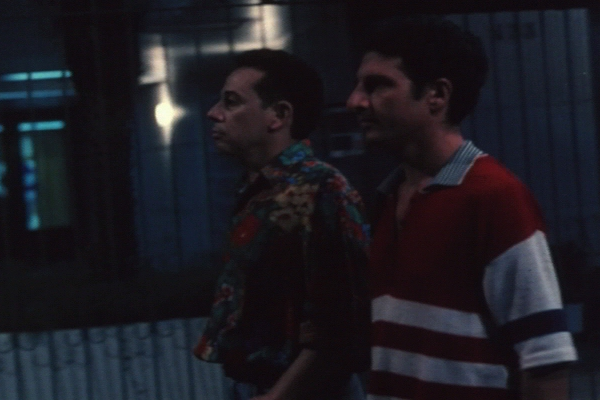

ÂNGELO ANDA SUMIDO (Angelo has vanished)
|
(35 mm, 17 min, color, 1997) Two old friends meet after a long time and plan to have dinner together, but then they lose sight of each other again in a labyrinth of iron gates, fences and walls in a big city. |
 Photo by Alex Sernambi: Antônio Carlos Falcão and Sérgio Lulkin |
{kind=link}
Director: Jorge Furtado
Executive Producer: Nora Goulart and Luciana Tomasi
Written by: Rosângela Cortinhas and Jorge Furtado
Cinematographer: Alex Sernambi
Art Director: Fiapo Barth
Music by: Leo Henkin
Production Coordinator: Leandro Klee
Editor: Giba Assis Brasil
Assistant Director: Amabile Rocha
A Casa de Cinema PoA Production
Main Cast:
Sérgio Lulkin (José)
Antônio Carlos Falcão (Ângelo)
Carlos Cunha Filho (the guard)
Prizes
- 25th Gramado Film Festival, 1997:
Best Art Direction, Special Regional Prize. - 4th Vitória Cine Video Festival, 1997:
Best Art Direction. - 7th Curta Cinema Festival, Rio de Janeiro, 1997:
Multishow Aquisition Prize. - 5th Cuiabá Film Festival, 1998:
Best Screenplay. - 5th Ceará Film Festival, Fortaleza, 1998:
Samburá Prize (Best Film according to the Cineclubs Confederation), Best Editing, Best Music Score. - 16th Uruguay Film Festival, Montevideo, 1998:
Special Mention.
Reviews
"Furtado returns with ANGELO HAS VANISHED, a study in urban paranoia. The film actually makes you uncomfortable because of the realism it uses to show people who are irredeemably separated by iron fences. A great work."
(Luiz Zanin Oricchio, O Estado de São Paulo, 24/07/97)
http://www.estado.estadao.com.br/edicao/pano/97/07/23/ca2309.html
"Directed by the acclaimed Jorge Furtado, ANGELO HAS VANISHED starts very well but ends abruptly and in an anticlimax, which is fatal in a short film. (...) Of course there are many brilliant moments, such as the excellent dialogs written by Furtado and the excellent editing by Giba Assis Brasil. Even so, this is a ‘lesser’ Furtado."
(Paulo Camargo, Gazeta do Povo, Curitiba, 11/08/97)
"ANGELO HAS VANISHED is a comical urban chronicle, with Kafkian traits, about the odyssey of a young man who goes out to have dinner with a friend (Angelo) and gets lost in the jungle of iron fences that the city has turned into. The film drew enthusiastic responses from the audience during the showing and lukewarm applause at the end. For the director, this happened because the end is deliberately anti-climatic. 'The film does not end, it fizzles out.' It is true. The audience’s interest is attracted by something (what happened to Angelo?) that the film does not show, in order to highlight the individualism of the protagonist. A bold choice for a film that describes a world where, as the director puts it, 'the individual, when he is in the public space, wants to keep his contact with the next person to a minimum'.
(José Geraldo Couto, Folha de São Paulo, 11/08/97)
"Filmmaker Jorge Furtado’s journey is peculiar. After receiving international acclaim for his short ISLAND OF FLOWERS (1989), he let others repeat his formula to the point of exhaustion and went on to do something different: experimenting with new narrative structures. In ANGELO HAS VANISHED (...) there is a muffled tension between what comes into the film as if by chance – the trash in the streets, the beggars, the nonsensical chit-chat of doormen and cab drivers, urban decay – and the individualistic and banal journey of the protagonist, who only wants to have dinner and go back home (...) 'The other' (be it the doorman, the beggars, the cab driver, and even his friend Angelo) is only an obstacle the protagonist has to get rid of. While he extracts the whole power from this confrontation between the individual cocoon and the hostile reality of the space that was once public, Jorge Furtado invests in a bold and almost suicidal choice of ending: the absence of dénouement as a demonstration that the ‘other’ only gets in the way of the protagonist. The urban odyssey ends when he eats a prosaic hot dog."
(José Geraldo Couto, Folha de São Paulo, 22/08/97)
09/08/1997